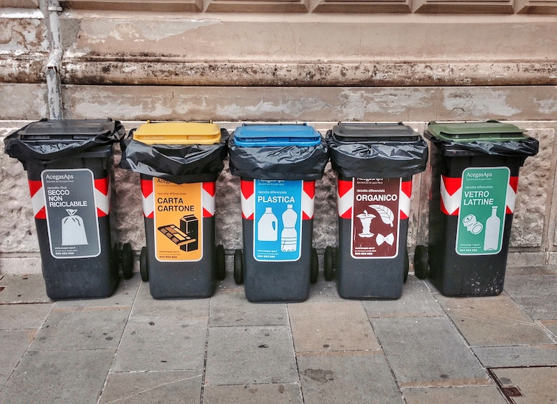

Photo by Francesca Tosolini
Italians recycle their garbage by throwing it into special bins designated for non-recyclable trash, paper, plastic, food waste and glass/cans. {This is an excerpt from chapter 15 “Miscellaneous information” of the eBook “Italy from the Inside. A native Italian reveals the secrets of traveling in Italy”}